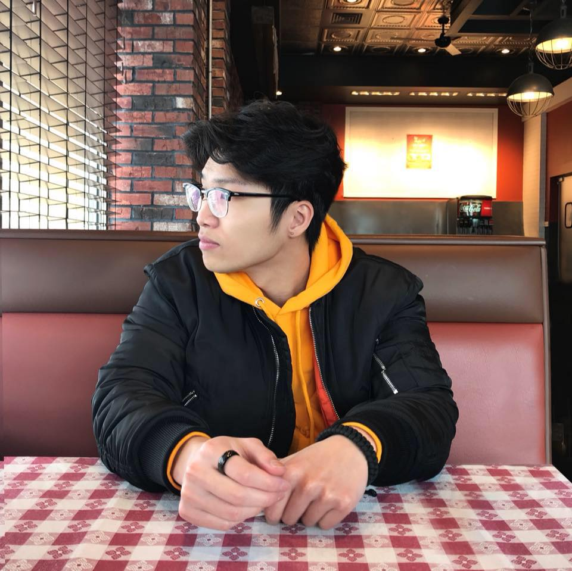

NATHAN VO

Summary
Hard-working and dedicated student with a strong technical skill set, seeking an entry level customer/technical support role or internship in the information technology field. Fast learner, motivated and willing to take on challenges as a leader or a team member. Project experience in front end web development and programming.
Education
North Hennepin Community College | Brooklyn Park, MN | (2021-2024)
A.S. Computer Science Transfer Pathways | GPA 3.6
Work Experiecne
Kyoto Sushi | Server
- Provide excellent customer service to ensure guest satisfaction.
- Educate customers on menu, suggesting items according to their taste and preference.
- Ensure each guest is served courteously, quickly, and efficiently.
Sam's Club | Fresh Food Associate
- During the pandemic, led the team to success by adapting swiftly to changing circumstances, implementing efficient work processes, and ensuring a seamless and safe operation.
- Organized fruits and vegetables in the display cases according to company standards.
- Provided customer service by responding to questions and requests in a timely manner.
Technical Skills
- Programming languages: C, Java, SQL, Python, HTML, CSS
- Tools: Microsoft Office
- Detail oriented, team collaboration
- Strong verbal and written communication
- Fluent in Vietnamese
- Effective organization and problem-solving
Contact Me